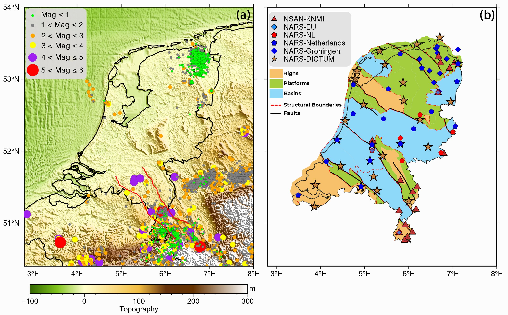

01 SCIENTIFIC CARTOGRAPHY
See the patterns in your data
Groundwater, coastlines, climate — transform spatial research into clear maps that make the important patterns visible.

EXPLORE MAPS
01 SCIENTIFIC CARTOGRAPHY
Groundwater, coastlines, climate — transform spatial research into clear maps that make the important patterns visible.

EXPLORE MAPS02 RESEARCH & PUBLICATION
From a thesis cover to a graphical abstract, bring your research together through considered illustration and precise visual communication.
 EXPLORE THESIS COVERS
EXPLORE THESIS COVERS03 VISUAL STORYTELLING
Connect maps, data and illustration in a visual narrative that helps your audience understand the bigger picture.
 EXPLORE VISUAL STORIES
EXPLORE VISUAL STORIESAkin Visuals combines earth science with visual design to transform complex scientific ideas into clear, engaging and meaningful visual communication.
The practice spans cartography, data visualization, scientific illustration, motion graphics, research figures, maps and visual storytelling.
A selection of scientific visualization, cartography, illustration and visual storytelling projects created to make complex research easier to understand.
Showing all 9 projects.
Scientific maps visualizing earthquake occurrence, tectonic structures and seismological station distribution. Carefully layered cartography makes spatial relationships across geological datasets easier to interpret.
A mobility map tracing trajectories and destinations while illustrating the factors that shape movement patterns. The cartographic design supports a clearer reading of spatial routes and their relationships.
A scientific data visualization of subsurface seismic velocity models, using cross-sectional views to communicate changes in the structure and properties of material beneath the surface.
Technical illustrations documenting seismometer sensor deployment and field configuration. The diagrams clarify instrument positioning and installation through structured scientific visual communication.
A thesis cover exploring planning-support systems institutionalization in Rwanda. Concentric patterns meet interconnected networks, referencing the relationship between spatial planning processes, actors and institutions. Designed for Deborah Adeola Oyeku, University of Twente — ITC.
A research thesis cover depicting the crust and upper mantle of the Netherlands. Geological maps, seismic profiles and an illustrated subsurface scene bring the scientific subject into a cohesive visual narrative. Designed for Stephen Akínwùmí Akínrẹmí, University of Twente — ITC.
A scientific motion visualization showing the spatial relationship between tectonic activity and earthquake occurrence. Animated mapping helps communicate geologic activity over time.
An explanatory visualization showing how seismic waves propagate through high- and low-velocity Earth materials toward seismic receivers. The illustration supports an understanding of wave travel and varying subsurface conditions.
A geological visualization exploring fault movement, the generation of earthquakes and the resulting changes at the surface. Composed to explain connections between subsurface processes and visible land deformation.
Selected contributions to scientific publications and research communication.
| Publication / Project | Publication | Year | Contribution |
|---|---|---|---|
| Groundwater Risk Mapping in West Africa | Journal of Hydrology | 2024 | Cover Illustration |
| Coastal Erosion Patterns: A Remote Sensing Approach | Environmental Research Letters | 2023 | Graphical Abstract |
| Tectonic Framework of the Study Region | Geological Society Special Publication | 2023 | Cover Design |
| Climate Variability Story Map | Featured Outlet / Blog | 2024 | Feature |
The visual language transformed my research into something immediately understandable without compromising scientific accuracy.
The mapping and scientific illustrations achieved the rare balance between technical accuracy and clear visual communication.
Image editing and raster illustration.
Vector illustration and print design.
Scientific cartography and geospatial visualization.
Data processing, analysis and custom visualization.
THE INTERSECTION OF SCIENCE & DESIGN
Whether you need a thesis cover, research figure, scientific illustration, map or visual story, let's create something that communicates your work clearly and beautifully.